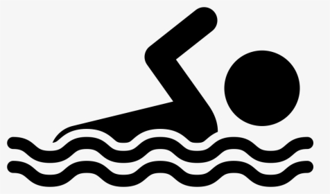

About me
Hi! I'm Lina Cardozo, I'm 20 years old (almost 21!) and I study Systems and Computing Engineering at Universidad de los Andes. I got into programming world when I was 13; I learned how to program in C++ and I loved it so much. From that moment, I knew perfectly what I was going to study in university! I consider myself as a detail oriented person and a fast learner.
A curious fact about me is that I can't bear misspelling. Everything that is written by me or a group in which I am must have good spelling. Moreover, I like keeping structure and order in what I do.
Last but not least, I love chocolate in every form.

My projects
|
Ludis August 2018 - December 2018 |
A web application where coaches or people who do exercise are able to create a profile for keeping track of their routines.
|
|
ORII May 2016 – November 2016 |
Web page of Interinstitutional and International Relationships Office from Central Technical Institute.
|
My interests
|
Data Science |
Software Development |
Business Architecture |
My hobbies
Singing |
Dancing
|
Swimming |
My skills
Programming Languages
Java, C++, Python, SQL
Technologies
Excel, HTML, CSS, Git, JUnit, Power BI
Languages
Spanish (Native)English (High Intermediate)
Korean (Beginner)
My academic information
- I studied Elementary School at Colegio Mi Patria.
- I studied High School at Instituto Técnico Central, La Salle.
- In 2014, I achieved 3rd at "Intercollegiate Computer Programming Competition", in which participated students from different schools of Bogotá.
- In 2016, I achieved 6th place out of final 100 participants at Lasallian Mathematical Olympiads, a competition between high school students from different schools.
- I graduated from High School in 2016.
- I know how to program in Java, Python, C++, and some Visual Basic and PHP.
- Currently, I am in 8th semester of Systems and Computing Engineering at Universidad de los Andes.
My professional experience
|
Tutor Universidad de los Andes |
In 2020, I worked as a tutor in CupiTaller, a programming help center from Universidad de los Andes. |
|
Teaching Assistant Universidad de los Andes |
In 2018, I was Teaching Assistant for the course Algorithmic and Object Oriented Programming, in which I provided tutorships of Java. |